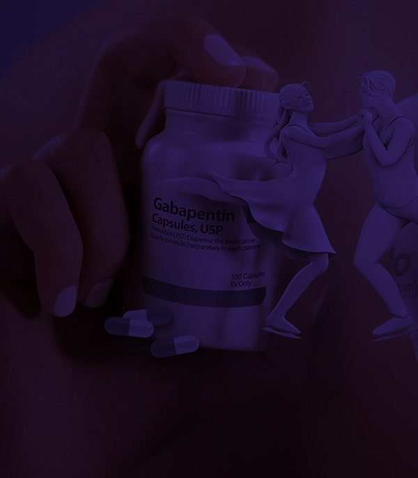

Scilex acquires, develops and commercializes non-opioid treatments for acute and chronic pain.
3
FDA-approved products
3
Pipeline candidates

If approved, it could become the first FDA-approved alternative to off-label epidural steroid injections. The first pivotal Phase 3 met its primary and secondary endpoints.
12M+
U.S. epidural steroid injections a year (company)
2
FDA Fast Track designations
SEMDEXA (SP-102) is investigational and not FDA-approved.
ZTlido® (lidocaine topical system 1.8%) provides continuous pain relief over its 12-hour administration period for post-herpetic neuralgia.
10,000
Physicians targeted by the ZTlido sales force
~34
People in the dedicated sales force (Jun 30, 2026)
2018
Year ZTlido launched
SEMDEXA, SP-103 and SP-104 are investigational and not FDA-approved. Pipeline timing and commercial results are forward-looking; see SEC filings for risk factors.